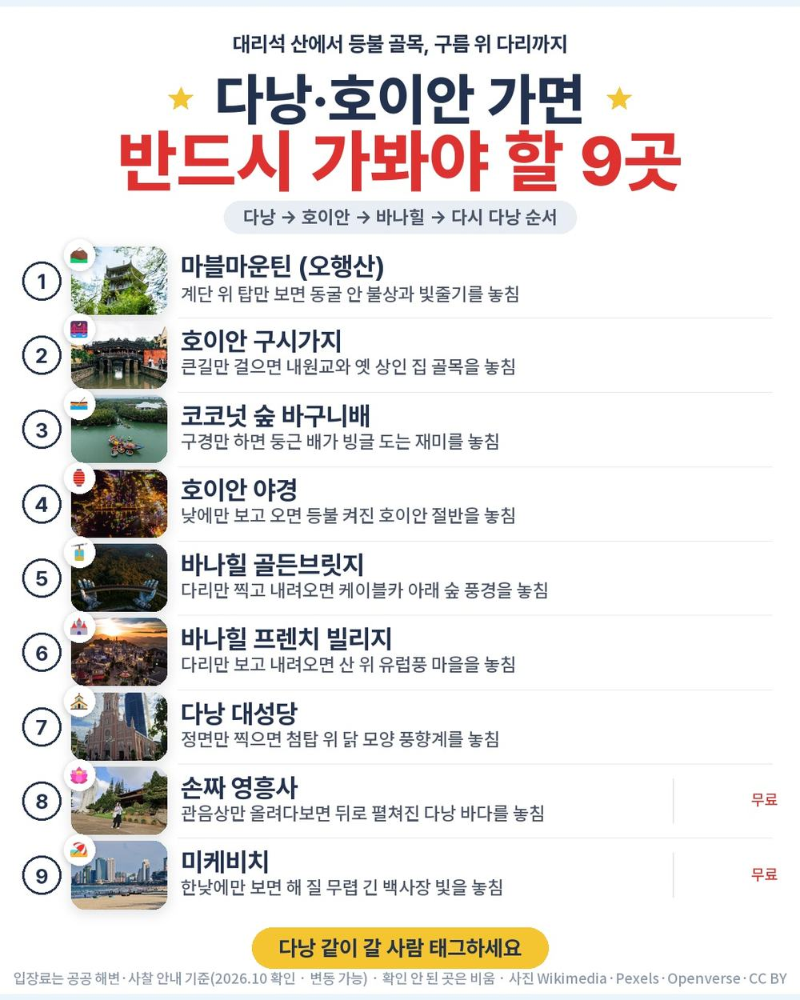
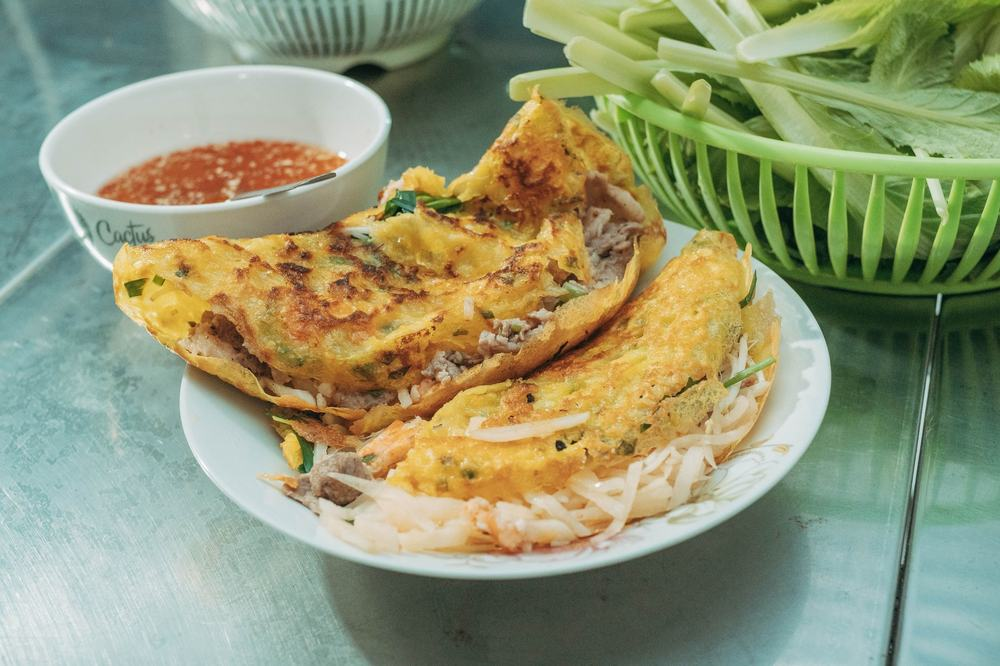
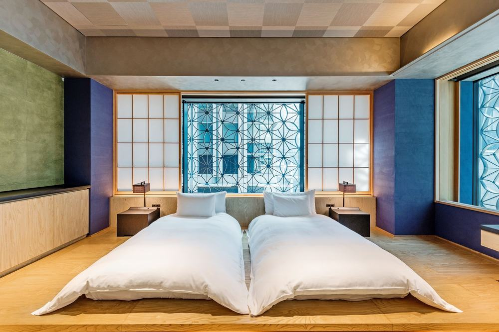
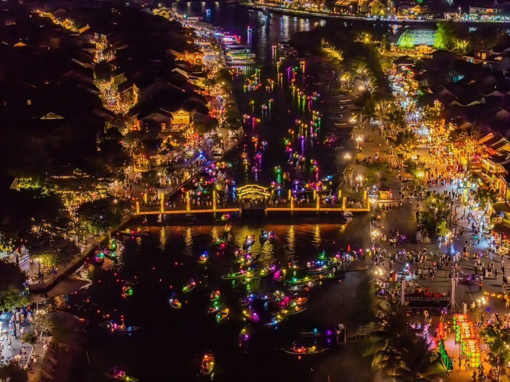
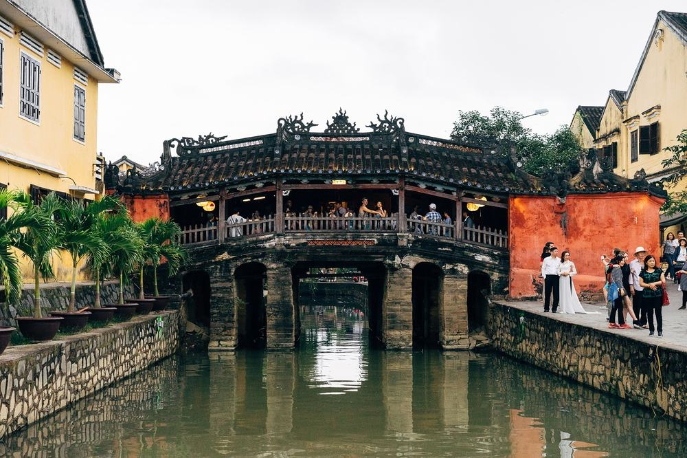
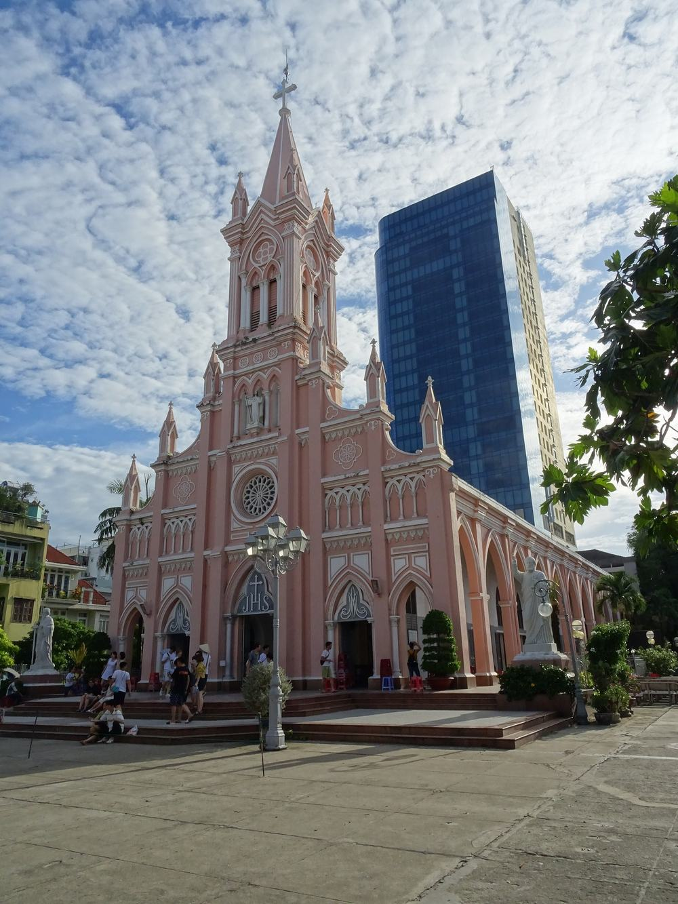

노랑풍선 부산출발 다낭 패키지 여행 54만 9천원, 마사지 두 번에 호이안 야간투어까지 들어간 5일

부산에서 다낭을 알아보면 인천 출발 상품이 훨씬 많음. 부모님 모시고 가려니 인천까지 올라가는 길부터 걸렸음.
그러다 노랑풍선 김해 출발 상품이 눈에 들어옴. 54만 9천원에 진에어 직항, 5성급 3박, 마사지 두 번(발 60분 + 전신 120분)까지 들어 있음. 기사·가이드 경비도 포함이고 선택관광은 없음. 대신 왕복이 밤 비행기임.
결론 — 추천. 김해 직항에 5성급 3박, 바나힐 골든브릿지·호이안 야간시티투어(씨클로)·바구니배·투본강 보트·한강 유람선까지 포함임. 다만 왕복 밤 비행기가 힘든 분, 쇼핑센터 방문 자체가 싫은 분, 호텔 이름을 미리 알아야 하는 분은 아님.
54만 9천원이 어디에 들어갔는지, 현지에서 더 내는 돈은 얼마인지 원문을 하나씩 뜯어봤음.
| 항목 | 내용 |
|---|---|
| 가격 | 1인 549,000원 (성인 · 10월 말 출발 기준) |
| 여행사 | 노랑풍선 |
| 항공 | 진에어 직항 · 김해 21:05 → 다낭 00:05 / 다낭 01:05 → 김해 07:10 |
| 숙소 | 5성급 3박 (2인 1실 · 일반 객실뷰) · 예정 센터 포인트 다낭 호텔 앤 레지던스 · 호텔 지정 불가, 출발 1~2일 전 안내 |
| 일정 | 3박 5일 · 전용 버스 · 한국어 가이드 · 식사 9회 · 쇼핑 3회 · 선택관광 0 |
| 가는 곳 | 마블마운틴 · 호이안 구시가지·바구니배·투본강 보트·야간시티투어(씨클로·소원등) · 바나힐 케이블카·골든브릿지 · 한강 유람선 · 다낭 대성당 · 한시장 · 영흥사 · 미케비치 |
▶ 내 출발일 오늘 기준 요금 확인 (제휴 링크 · 예약 시 수수료를 받으며 가격은 같습니다)
▶ 10월 16일 기준 다낭 패키지 최저 29만 9천원부터 — 출발일별 값 한 화면에: 비교 페이지
| 순서 | 다루는 것 | 한 줄 결론 |
|---|---|---|
| 1 | 구성 뜯어보기 | 노팁·노옵션, 현지 추가금은 매너팁 정도 |
| 2 | 일정 살펴보기 | 2일차 호이안이 가장 많이 걷는 날 |
| 3 | 자유여행 VS 패키지 | 직접 짜면 95만원 | 항공권만 44만 6천원, 패키지가 38만원쯤 덜 듦 |
1. 구성 뜯어보기
요약 — 진에어 김해 왕복·5성급 3박·식사 9회·관광 입장·마사지 2회·가이드·전용 버스·기사/가이드 경비·보험이 들어 있음. 선택관광은 0, 쇼핑은 3회, 현지에서 더 내는 건 매너팁 정도임.
1-1. 54만 9천원에 들어 있는 것

포함 항목을 정리하면 이럼.
- 진에어 김해–다낭 직항 왕복 항공권 + 유류할증료·세금
- 5성급 호텔 3박 (2인 1실) · 첫날 객실마다 과일바구니
- 식사 9회 (특식 5회 — 쭈꾸미 · 호이안 전통식 · 반세오 정식 · 무제한 삼겹살 · 포시즌 뷔페)
관광·체험과 경비는 이렇게 들어 있음.
- 바나힐 케이블카·골든브릿지 · 호이안 구시가지·바구니배·투본강 보트·야간시티투어(씨클로)
- 발마사지 60분 + 전신마사지 120분 · 한강 유람선 · 아오자이 체험
- 기사·가이드 경비 · 여행자보험
이 상품의 차별점은 부산에서 바로 떠나면서 마사지 두 번과 호이안 낮·밤을 다 넣었다는 것임. 인천까지 올라갈 필요가 없음.
출발일별 요금 확인하기
https://naver.me/GjygLkiY
1-2. 식사 아홉 번

식사는 9회임. 2·3·4일차 아침은 호텔 조식, 점심·저녁은 한식 3번과 현지식·뷔페가 섞임. 특식이 다섯 번 들어 있음.
1일차는 밤에 도착하고 5일차는 새벽에 떠나서, 이 두 날은 포함 끼니가 없음. 호이안에선 연꽃잎 차와 못주스를 한 잔씩 줌.
1-3. 호텔

세 밤 다 5성급임. 일정표엔 센터 포인트 다낭 호텔 앤 레지던스가 적혀 있지만 호텔 지정은 안 되고, 출발 1~2일 전에 확정됨. 객실은 일반 객실뷰임.
세 밤을 한 곳에서 자서 짐은 한 번만 풀면 됨. 혼자 방을 쓰면 3박에 160,000원이 붙음.
1-4. 현장에서 더 낼 돈
| 항목 | 금액 | 비고 |
|---|---|---|
| 기사·가이드 경비 | 0원 | 상품가에 포함(노팁) |
| 선택관광 | 0원 | 선택관광 없음 |
| 매너팁 | 약 50,000원 | 발·전신 마사지·바구니배·씨클로 4번 × 2인 × 4달러로 넉넉히 잡음 (원문 안내 관례 2~4달러) |
| 합계 (2인) | 약 50,000원 | 상품가 109만 8천원 + 5만원 = 약 115만원 |
두 사람이면 약 115만원, 한 사람으로 치면 약 57만원임. 여기에 개인 경비만 더하면 됨.
1절 자주 나오는 질문
Q. 선택관광은 정말 없나요?
A. 없음. 선택관광 항목이 비어 있고, 바나힐 케이블카·호이안 투어·마사지·유람선이 상품가 안에 들어 있음.
Q. 가이드 경비는 따로 내나요?
A. 안 냄. 기사·가이드 팁이 포함인 노팁 상품임. 마사지 팁 같은 매너팁만 따로임.
Q. 쇼핑은 몇 번인가요?
A. 3회임. 4일차 오전에 커피·과일, 노니·침향, 잡화 매장을 각 1시간쯤 들르고, 사는 건 자유임.
2. 일정 살펴보기
요약 — 1일차 밤 비행기로 도착, 2일차 아오자이 체험·마블마운틴 뒤 호이안 낮과 밤, 3일차 바나힐과 전신마사지·한강 유람선, 4일차 쇼핑·대성당·한시장·영흥사 뒤 미케비치를 거쳐 새벽 비행기로 귀국.
2-1. 하루하루 어디를 가나

| 일차 | 가는 곳 | 식사 | 숙소 |
|---|---|---|---|
| DAY 1 | 김해 21:05 출발 → 다낭 00:05 도착 → 호텔 | — | 5성급 호텔 |
| DAY 2 | 오전 자유(11:00 미팅) → 아오자이 체험 → 마블마운틴 → 호이안 구시가지·바구니배·투본강 보트·야간시티투어(씨클로·소원등) → 발마사지 60분 | 조 호텔식 · 중 한식 · 석 현지식 | 5성급 호텔 |
| DAY 3 | 바나힐 케이블카·테마파크·골든브릿지 → 전신마사지 120분 → 한강 유람선 | 조 호텔식 · 중 뷔페식 · 석 한식 | 5성급 호텔 |
| DAY 4 | 체크아웃 → 쇼핑 3곳 → 다낭 대성당 → 한시장 → 영흥사 → 미케비치 음료 1잔 → 공항 | 조 호텔식 · 중 현지식 · 석 한식 | — |
| DAY 5 | 다낭 01:05 출발 → 김해 07:10 도착 | — | — |
| 일차 | 버스 이동 | 걷기 | 포함 식사 |
|---|---|---|---|
| DAY 1 | 약 0.5시간 | 적음 | 포함 끼니 없음 |
| DAY 2 | 약 2시간 | 중상 | 조 호텔식 · 중 한식 · 석 현지식 |
| DAY 3 | 약 1.5시간 | 보통 | 조 호텔식 · 중 뷔페식 · 석 한식 |
| DAY 4 | 약 1.5시간 | 보통 | 조 호텔식 · 중 현지식 · 석 한식 |
| DAY 5 | 거의 없음 | 적음 | 포함 끼니 없음 |
| 합계 | 약 5.5시간 | - | 9끼 (호텔식 3 · 한식 3 · 현지식 3) |
요약 — 버스 이동은 5일 동안 약 5.5시간, 포함 식사는 9끼(호텔식 3 · 한식 3 · 현지식 3)임. 가장 많이 걷는 날은 DAY 2임.
2-2. 2일차 — 대리석 산과 호이안 낮·밤

첫날 자정에 도착해서 2일차 오전은 11시까지 자유임. 아오자이를 입고 기념사진을 찍은 뒤, 다낭에서 9km 떨어진 마블마운틴으로 감. 가장 높은 투이썬이 해발 108m임.
버스로 30분 가면 호이안 구시가지임. 도시 전체가 유네스코 세계문화유산이고 내원교와 옛 상인 집을 걸어서 봄. 코코넛 숲 바구니배, 투본강 보트를 타고, 해가 지면 씨클로로 등불 거리를 도는 야간시티투어가 이어짐. 다낭으로 돌아와 발마사지 60분으로 마무리함.
2-3. 3일차·4일차 — 바나힐, 그리고 다낭 시내

3일차는 바나힐임. 세계에서 두 번째로 긴 케이블카로 올라가 골든브릿지와 프렌치 빌리지를 봄. 내려와서 전신마사지 120분을 받고, 저녁 한식 뒤 한강 유람선을 탐.
4일차는 체크아웃 뒤 쇼핑 3곳, 다낭 대성당, 한시장, 해수관음상이 65m인 영흥사를 봄. 저녁 뒤 미케비치에서 음료 한 잔을 마시고 공항으로 감. 이날은 숙소 없이 01:05 비행기까지 이어짐.
2절 자주 나오는 질문
Q. 많이 걷나요?
A. 2일차 호이안 구시가지가 걷는 구간이 가장 긺. 대신 씨클로·보트로 나눠 움직임. 나머지는 버스로 옮겨 다니며 짧게 걷는 편임.
Q. 비행기는 몇 시인가요?
A. 진에어 직항이고 김해 21:05 출발 → 다낭 00:05 도착, 귀국은 다낭 01:05 출발 → 김해 07:10 도착임. 왕복 밤 비행기임.
Q. 준비할 건 뭔가요?
A. 원문 안내로 6~11월 다낭 평균 기온은 27~36도라 여름옷이면 되고, 우기엔 하루 1~2차례 소나기가 옴. 환전은 미국 달러, 매너팁은 2~4달러가 관례임. 한국 여권은 45일 무비자이고 만료일이 6개월 넘게 남아 있어야 함.
3. 자유여행 VS 패키지 | 직접 짜면 95만원
요약 — 같은 일정을 직접 짜면 1인 95만원쯤 듦. 패키지는 매너팁을 더해도 약 57만원이라 38만원쯤 덜 듦. 김해 직항 항공권만 44만 6천원임.
3-1. 같은 일정을 직접 짜면

같은 일정을 혼자 짠다고 치고 항목별로 계산해 봄. 10월 말 출발, 2인 1실 1인분임. 항공 말고는 추정치라 근거 열에 적어 둠.
| 항목 | 금액 | 근거 |
|---|---|---|
| 부산–다낭 왕복 항공 | 446,000원 | PUS↔DAD 직항 왕복 1인 44만 6천원 (앞으로 두 달 직항 운임 하위 25% 값 · 2026-10-16 마이리얼트립 조회) |
| 5성급 호텔 3박 | 150,000원 | 2인 1실 1인분 (추정) |
| 바나힐 케이블카 입장 | 52,000원 | 1인 (추정) |
| 호이안 투어·바구니배·씨클로 | 60,000원 | 1인 (추정) |
| 마사지 2회 (60분 + 120분) | 60,000원 | 1인 (추정) |
| 식사 (점심 3 · 저녁 3) | 90,000원 | 한식·현지식 기준 (추정) |
| 공항 이동 · 차량 | 80,000원 | 공항 픽업·호이안·바나힐 왕복 2인 나눔 (추정) |
| 여행자보험 · 유심 | 15,000원 | 5일 기준 |
| 가이드 | — | 자유여행은 없음 |
| 합계 | 약 953,000원 |
직접 짜실 분은 이 날짜 항공권부터 보세요 — https://myrealt.rip/w6RJ53 (마이리얼트립 제휴 링크)
패키지는 549,000원에 매너팁을 넉넉히 더해도 약 57만원임.
3-2. 그래서 뭐가 다른가
항공권 값이 패키지 값의 80%를 넘음. 직항 왕복이 44만 6천원인데 패키지는 54만 9천원이라, 그 10만원 남짓 차이 안에 5성급 3박과 관광·마사지·식사가 들어 있는 셈임.
- 호이안·바나힐은 다낭 시내에서 따로 차를 잡아 오가야 함
- 마사지·유람선·바구니배를 하나씩 예약해야 함
- 자정 도착·새벽 출발 이동을 직접 챙겨야 함
패키지는 이 전부가 전용 버스 한 대로 붙고, 한국어 가이드가 붙음. 자유여행 계산표에 가이드 행이 비어 있는 게 그 뜻임 — 0원이 아니라 살 수 없는 것임.
3-3. 어느 쪽이 맞나
| 자유여행이 맞음 | 패키지가 맞음 |
|---|---|
| 낮 비행기를 꼭 타고 싶음 | 김해에서 바로 떠나고 싶음 |
| 다낭 한 곳에 오래 머물고 싶음 | 다낭·호이안·바나힐을 한 번에 돌고 싶음 |
| 쇼핑센터를 한 번도 안 가고 싶음 | 부모님과 팁 걱정 없이 돌고 싶음 |
| 호텔을 직접 고르고 싶음 | 마사지·유람선까지 맡기고 싶음 |
3절 자주 나오는 질문
Q. 자유여행이 더 싸지 않나요?
A. 계산해 보면 자유여행이 약 95만원, 패키지가 매너팁을 더해 약 57만원임. 항공권만 44만 6천원이라 이 상품은 패키지 쪽이 확실히 덜 듦.
Q. 부산 출발이라 불편한 점은 없나요?
A. 김해에서 다낭까지 진에어 직항 4시간 40분이라 인천까지 올라갈 필요가 없음. 대신 왕복이 밤 비행기라 첫날·마지막 날 피로는 감안해야 함.
Q. 4일차엔 호텔이 없나요?
A. 없음. 아침에 체크아웃하고 관광·저녁 뒤 미케비치를 거쳐 01:05 비행기를 탐. 짐은 버스에 실어 둠.
마무리
정리하면 이럼.
추천함. 54만 9천원에 진에어 김해 직항, 5성급 3박, 식사 9회(특식 5회), 바나힐 골든브릿지·호이안 야간시티투어·바구니배·투본강 보트·마사지 두 번·한강 유람선이 들어 있음. 기사·가이드 경비가 포함이고 선택관광이 없어, 현지에서 더 내는 건 매너팁 정도임.
이런 분은 고르면 안 됨. 왕복 밤 비행기가 힘든 분, 쇼핑센터 방문 자체가 싫은 분, 호텔 이름을 미리 알아야 마음이 놓이는 분.
| 맞는 사람 | 안 맞는 사람 |
|---|---|
| 김해에서 바로 떠나고 싶은 부산·경남 분 | 밤 비행기 왕복이 힘듦 |
| 팁·선택관광 고민이 싫음 | 쇼핑센터 방문이 싫음 |
| 다낭·호이안·바나힐 + 마사지 2번 | 호텔 이름을 미리 알아야 함 |
걸리는 점이 있긴 한데 상품 흠이라기보다 맞는 사람과 안 맞는 사람을 가르는 조건에 가까움.
오늘 기준 출발일별 요금 보기
https://naver.me/GjygLkiY
같은 목적지 다른 여행사 패키지, 쇼핑·선택관광·가이드 경비까지 비교
https://pkg-lab.com/go/?q=%EB%8B%A4%EB%82%AD&utm_source=blog&utm_medium=post&utm_campaign=daily
함께 보면 좋은 글
노랑풍선 부산출발 북해도 패키지 여행 102만원대, 같은 북해도 4일 164만원대 상품과 뭐가 다를까
https://blog.naver.com/robotnady10/224442162807
노랑풍선 후쿠오카 패키지 여행 94만 9천원, 온천 두 밤에 게 뷔페·술 무제한까지?
https://blog.naver.com/robotnady10/224440999967
이 글에는 네이버·마이리얼트립 제휴 링크가 포함되어 있으며, 링크를 통해 예약하시면 일정 수수료를 받습니다. 가격은 동일합니다. 가격과 구성은 2026년 10월 16일 확인 기준이며 출발일에 따라 달라질 수 있습니다.
▶ 이 상품, 영상으로 보기 (유튜브)
▶ 다낭 패키지 오늘 값 나란히 비교
▶ 같은 목적지 다른 여행사 패키지, 쇼핑·선택관광·가이드 경비까지 비교: pkg-lab.com
사진 출처 (저작자 · 라이선스):
Da Nang Cathedral — CC BY-SA 4.0 (Wikimedia Commons) 원본

그 밖의 사진: Pexels
쇼츠·클립 영상과 사진:
Epic Gondola Ride | Ba Na Hills Vietnam — Explore Outdoors With Mike (YouTube, CC BY) 원본
🌉 Drone Tour at Cau Vang – The Breathtaking Golden — Dr. Jon's Desk (YouTube, CC BY) 원본
4K🇻🇳 🚶WALKING TOUR 베트남 호이안 올드타운 야경투어 야시장 투본강 소원등 풍 — hikangs 4K (YouTube, CC BY) 원본
MARBLE MOUNTAIN DA NANG: Bird's Eye View Drone Tou — Your Da Nang Adventure (YouTube, CC BY) 원본
Grotte Huyen Khong — CC BY 2.0 (Wikimedia Commons) 원본